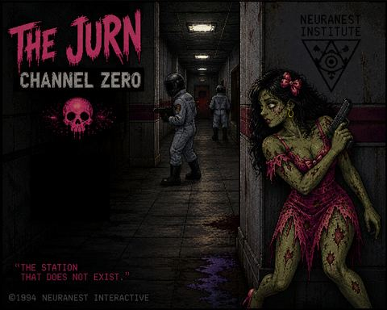

BETATHE JURN: CHANNEL ZERO
Beauty Never Dies.
DieAnna Graves has a problem.
NeuraNest Institute has been working on something they don't want the world to know about—a secret weapon capable of manipulating the mysterious broadcast known only as Channel Zero, the station that does not exist.
DieAnna's mission is simple: infiltrate the NeuraNest facility, fight her way through its heavily guarded laboratories, steal the plans for the secret weapon, and get the hell out.
Armed with nothing but a pistol, a knife, and an attitude that refuses to stay dead, DieAnna must navigate the dark corridors of the Institute while uncovering the truth behind V!SION and its connection to Channel Zero.
The deeper she goes, the stranger things become.
NeuraNest is watching.
Channel Zero is broadcasting.
And DieAnna Graves is coming for the plans.
Survive. Fight. Disrupt.
The station that does not exist.
This is a Beta release — the NeuraNest Files are still being uncovered. Expect rough edges while Episode 1 keeps evolving.
← Back to Games